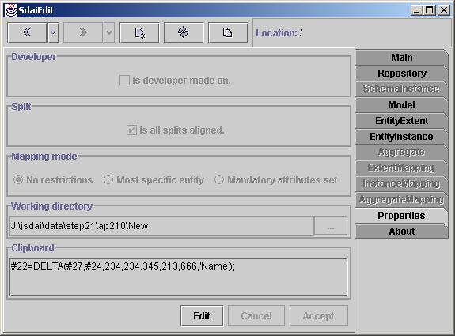

Properties tab
Properties tab contains information on applications properties. It have no
relation to SDAI directly. All properties listed in this tab can also be
found in SdaiEdit.properties file located in repos path as special directory
application.

Developer
Developer check box will switch on and of links from pages to dictionary
data. This is needed for users who are not interested in meta data. Usually
type labels contains links to meta data.
Split
On Entity Instance and Instance Mapping pages attributes types and values
are separated with split component where you can change sizes between these
to areas. By default all attributes are aligned to one split, so all attributes
values begins at same position. If you want you can make that attributes
value will be split by entity data types. So you will have more space for
attributes values, but attributes will not be aligned by one line.
Mapping mode
This will impact users witch are working with mapping. There are three level
restrictions for mapping related data. First one (default) is no restrictions.
Second one will impact displayed types available for instances. If selected
it will ignore not specific types for instances representation. Third will
require all mandatory attributes to be set. Otherwise it will be minded as
not fulfill mapping and will not be shown.
Working directory
This will represent default directory where yours part 21 files will be placed
or taken. It will change automatically if you will choose other path in save
or open dialogs. Also you can specify it here, by typing in field or choosing
from dialog.
Clipboard
Clipboard shows data stored in our own session clipboard which is common
for all application ran on same java virtual machine. It is used for editing
operations in SdaiEdit. here you can view all you clipboard content.
Changing properties
At the beginning all properties in page are disabled. If you want to change
them you need to press Edit button. After that you will be able change
them. Then you can Accept or Cancel changes. Accept will reset
all you changed properties for pages immediately.